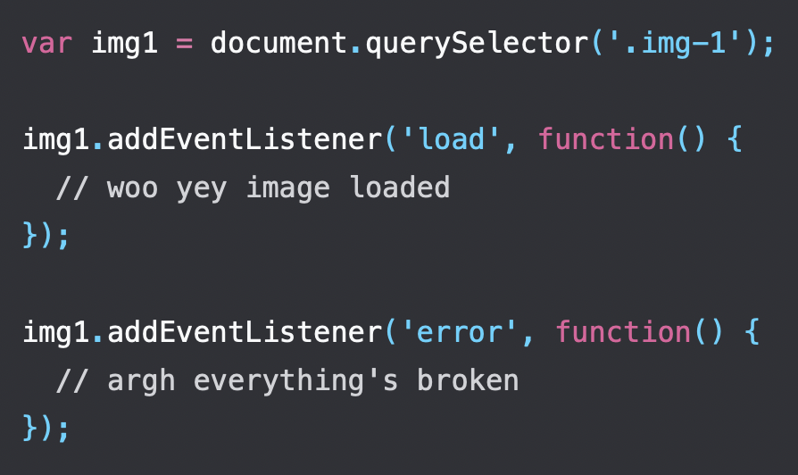
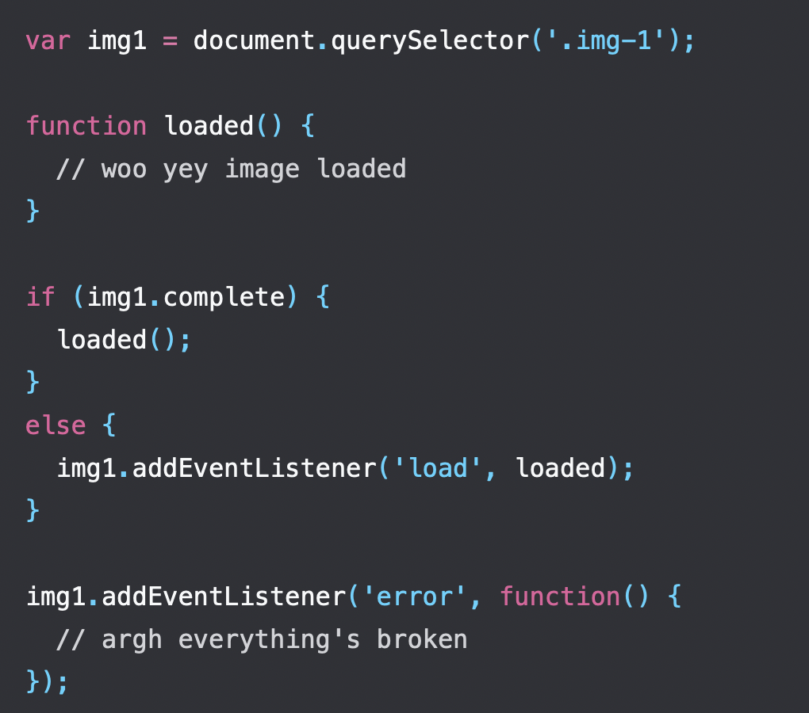

: Priyansh Vyas
undefined ECMAScript is the scripting language that forms the basis of JavaScript.
ECMAScript standards set in 2015 are collectively called as ES6.
ECMA stands for European Computer Manufacturers Association.
An anonymous function is a function that was declared without any named identifier to refer to it. As such, an anonymous function is usually not accessible after its initial creation.
One common use for anonymous functions is as arguments to other functions.
JavaScript programs started off pretty small — most of its usage in the early days was to do isolated scripting tasks, providing a bit of interactivity to your web pages, so large scripts were generally not needed.
Fast forward a few years and we now have complete applications being run in browsers with a lot of JavaScript code. Be it for frontend or backend. Now it makes sense to start thinking about mechanisms for splitting JavaScript programs up into separate modules that can be imported when needed.
JS modules rely on the import and export statements.
There are two types of exports: Named and Default.
person.js :
import { name, age } from "./person.js";
message.js :
import message from "./message.js";
Events are actions or occurrences that happen in the system you are programming, which the system
tells you about so your code can react to them.
For example, if the user clicks a button on a webpage, you might want to react to that action by
displaying an information box.
Every time such an event occurs, we might want to handle these events so as to perform a specific task.
The recommended mechanism for adding event handlers in web pages is the
addEventListener() method:
Changing the background-color of the body to a random color on button
click.
JavaScript is single threaded, meaning that two bits of script cannot run at the same time; they have to run one after another. In browsers, JavaScript shares a thread with a load of other stuff that differs from browser to browser.
But typically JavaScript is in the same queue as writing markup to the page, updating styles, and handling user actions. One thing happening delays the other.
As a human being, you're multithreaded. You can keep an eye on it Google Meet in your phone , watch Valorant videos on your laptop, listen to Spotify, all while eating Nutella. The only blocking function we have to deal with is sneezing, where all current activity must be suspended for the duration of the sneeze.
Let's say you want to display an image on your webpage and depending on whether the image has been loaded or not you want to perform some tasks.
This can be achieved by :
It's possible that the events happened before we started listening for them, so we need to work around that using the "complete" property of images.
This doesn't catch images that errored before we got a chance to listen for them; unfortunately the DOM doesn't give us a way to do that.
Also, this is loading one image. Things get even more complex if we want to know when a set of images have to be loaded.
This is solved by a ES6 feature known as a Promise.
At their most basic, promises are a bit like event listeners except :
A promise can be:
The Document Object Model is a programming interface for web documents. It represents the page so that programs can change the document structure, style, and content. The DOM represents the document as nodes and objects; that way, programming languages can interact with the page.
DOM can be modified with a scripting language such as JavaScript.
With the object model, JavaScript gets all the power it needs to create dynamic HTML.